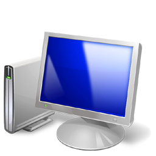
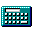
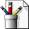
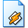
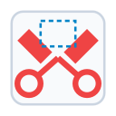

CPU METER
35%
Notas rápidas
✕





Equipo
Equipo
Unidades de disco duro (1)
Disco local (C:)
116 GB disponibles de 250 GB
Calculadora
Ver
Edición
Ayuda
Sin título - Paint
Herramientas
Colores
Reproductor de Windows Media
Kalimba - Mr. Scruff
Música oficial de muestra de Windows 7
Herramienta Recortes
Papelera de reciclaje
Vaciar la papelera de reciclaje
Restaurar todos los elementos
La papelera de reciclaje está vacía.
MSN España - Windows Internet Explorer
🔍
Bing
Navegando con aceleración de hardware en Internet Explorer 9
Windows 7 Ultimate
Disfruta de Aero Peek, Aero Snap, Aero Shake y librerías de medios integradas.
Rendimiento del Sistema
Tiempos de arranque optimizados y bajo consumo de memoria RAM.